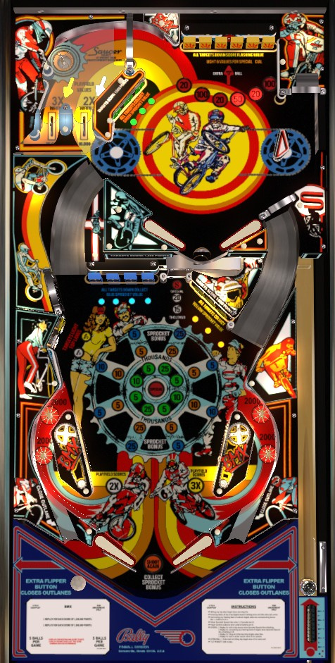

The plunge puts the ball on the upper playfield. As a reflex skill shot, try to send the ball into the top left lanes to instantly light 2x or 3x playfield scoring for that ball, without hitting any other targets along the way. If you fail the skill shot, hitting 9 total targets on either playfield will light one of the lower playfield's left standup targets to reactivate the top lanes playfield multiplier. Once you have a playfield multiplier in place, stay at the top of the game and try to complete the 6-bank of drop targets as much as possible.
The below picture of BMX's playfield was taken from the VPX recreation by JPSalas.
A full plunge feeds the ball to the upper playfield right flipper. If you shoot the ball into the top left lanes of the upper playfield before registering any scoring switch, you instantly earn 3x playfield for the leftmost top lane or 2x playfield for the rightmost top lane. Playfield multipliers last until the end of the current ball number (meaning it is held over across extra balls too). If you hit any scoring switch in the game after your plunge, the 2x and 3x playfield available at the top lanes will unlight. To relight them, you must hit a coloured standup or drop targets around the playfield to light the lower left standup targets for 5 seconds. I don't know exactly what lights the lower left standup targets; it seems to require hitting between 10 and 15 of the game's other drop or standup targets. Hitting the yellow or white lower left standup targets when lit will in turn light the 3x and 2x top lanes for playfield multiplier.
Each drop target down in the upper 6-bank scores 1,000 points. There is a moving light in front of the bank that rotates between values of 25,000, 100,000, 25,000, 50,000, 25,000, and 100,000 points. Knocking down any target in the bank stops the moving light. Completing the remainder of the bank within 25 seconds of knocking down the first target scores the locked-in value and lights the insert solidly; solidly lit inserts are excluded from the rotating light. If the bank is not completed within 25 seconds, it resets. If an extra ball has not yet been collected on the current ball, the standup target behind the 6-bank will be lit for extra ball for 3 seconds after the bank is completed. Collecting all 6 possible values from the 6-bank scores an instant special and resets the solid lights in front of the bank so that all 6 completion values can be collected again. In competition/novelty play, the extra ball only scores 25,000 points and special only scores 50,000, which is not worth going for. However, playfield multipliers earned from the top lanes do apply to the 6-bank completion values, making the top drop targets generally the best (and most consistent) scoring feature in the game.
Knocking down a blue drop target on the lower playfield or hitting a yellow or green standup target scores 1,000 points. Completing a bank of blue, yellow, or green targets by dropping all of the blue drops or unlighting all three yellow or green targets scores the current Sprocket Value for that colour and lights one more light on that colour's Sprocket in the center of the table. Starting at 1 o'clock and going clockwise, the inserts on each ring of the sprocket indicate 25, 5, 10, 5, 25, 5, 10, and 5 thousand points. When a blue, yellow, or green light is lit by completing that colour's bank, it will rotate around the sprocket very quickly. Completing the bank again briefly stops the rotating light, scores the lit value, then adds one more lit number and resumes the rotating. Up to 4 lights can be lit in a circle at any one time; the lights will always be 2 or 4 spaces apart from each other. The current Sprocket Value- all three colours at once- can be scored by making the saucer above the top left lanes, or by draining the ball as the end of ball bonus. The fact that the Sprocket Value rotates constantly and so quickly is what causes BMX to fail somewhat as a tournament game: the exact value of completing most target banks or of the end of ball bonus changes so quickly that it is effectively random, leading to a strategy of "just keep the ball in play as long as possible and hope you roll high on the target values". All Sprocket Values are multiplied by the playfield multiplier, including the full collects earned from the top saucer and the end of ball bonus. All Sprocket lights are reset at the end of a ball (unless an extra ball was earned). Lighting either 8 or all 12 Sprocket lights (based on game settings) will in turn light the top saucer for a Special.
The center saucer can be shot directly, or is where the ball ends up when it drains between the upper playfield flippers. Making the saucer scores and advances the lit value: 1,000 - 16,000 - 36,000 - 36,000 + special. If 5 seconds pass without the saucer being scored, its value resets to 1,000 points.
The flipper positions and slingshots are mostly normal, but there is only one lane on either side. These lanes serve as both in lanes and out lanes. There are additional buttons on the side of the cabinet next to the flipper buttons that operate this "Flex Save", which pops up a small rail that closes off the gap and allows the lane to feed the ball to the flipper. It can be triggered at any time, lasts for about 1 second, and then also has a cooldown of about 3 seconds before it can be used again. When the Flex Save is available, the star rollovers in that side's in lane will be lit. Dexterity and reaction time are required to operate these effectively given how quickly the ball can sometimes move in this game. Unlike Hardbody and Dungeons & Dragons (future games which used this feature), the Flex Save will never automatically activate for you, and the amount of time that the Flex Save is raised after the button is pressed does not change over time.
End of ball bonus is simply a collect of the current Sprocket value, summing all lit lights across all 3 colours and multiplying them by the current playfield multiplier. Max bonus is theoretically 3x 3x 70,000 = 630,000 points, but I don't think the three Sprocket rings ever line up in such a way to make that possible. The end of ball bonus is equal to exactly which Sprocket lights are lit when the ball enters the outhole, and varies wildly from moment to moment.
An extra ball on BMX is effectively just a one-time-use ball save with no time limit. When you drain with an extra ball available, you do collect the end of ball bonus, but all other playfield features are kept as they were without being reset, including all lit Sprocket and 6-bank lights and any earned playfield multipliers. By default, the solidly lit 6-bank awards and all Sprocket lights reset at the end of each ball, though settings exist to allow them to carry over.
In competition/novelty play, extra balls score 25,000 points and specials score 50,000 points. These are pitiful numbers that are not worth going out of your way for. Max one extra ball per ball in play.
Lit lower left standup targets, which re-enable the top lanes for playfield multipliers, can stay lit for 5 or 8 seconds.
The top extra ball can be available for 5 seconds instead of 3.
Pressing the Flex Save button can turn the out lanes into in lanes for 2 seconds at a time instead of 1.